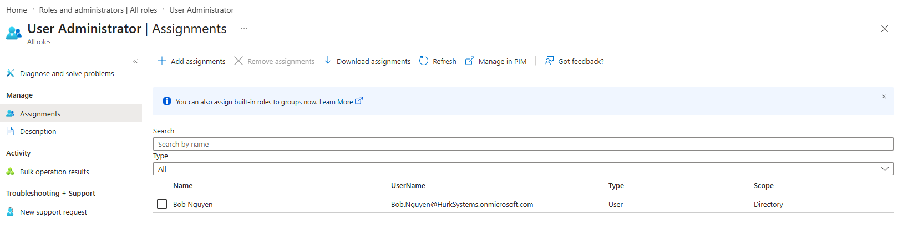
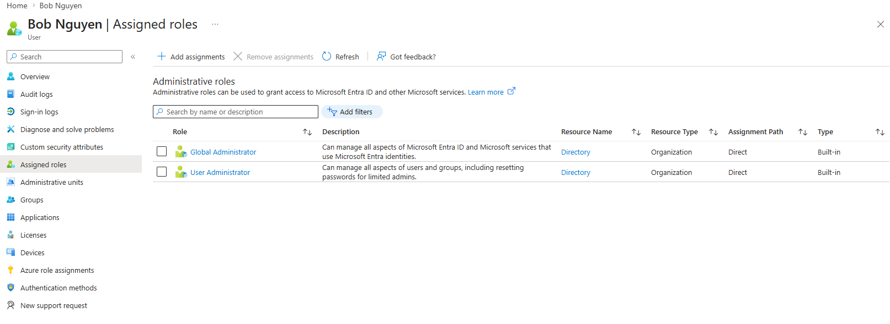
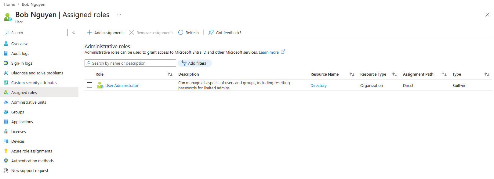
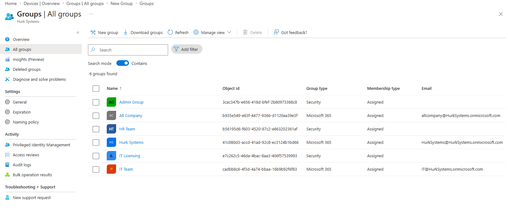
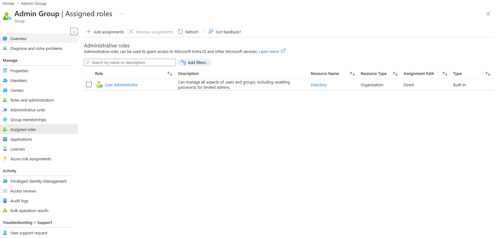
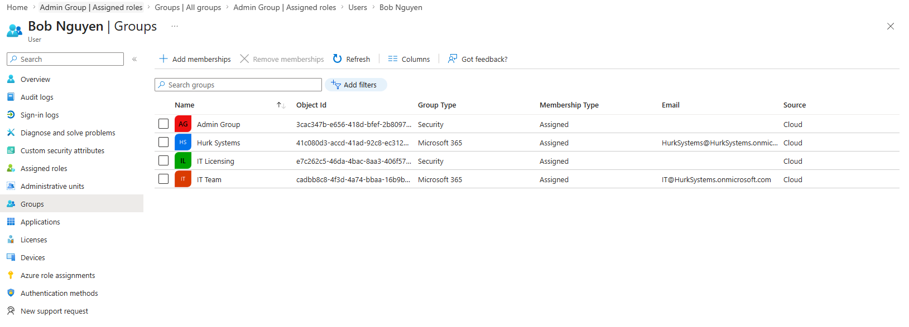

MS-102 Lab 3 - Roles and Administrative Access
Published: April 26, 2026
Overview
This lab demonstrates how administrative roles are assigned and tested in Microsoft 365. It focuses on role-based access, least privilege, and using role assignable groups to manage administrative access.
Objective
Manage administrative access in Microsoft 365 where:
- Users are assigned admin roles
- Permissions are controlled using roles
- Least privilege access is implemented
Requirements
Devices / Tools
- Microsoft 365 tenant (same as previous labs)
- Admin access account
Tasks
Task 1 - Explore Available Roles
Go to:
- Entra ID > Roles and administrators
Review:
- Global Administrator
- User Administrator
- Helpdesk Administrator
What is the purpose of the Global Administrator role?
Global Administrator can manage all aspects of Microsoft Entra ID and Microsoft 365 services.
What is the purpose of the User Administrator role?
User Administrator can manage users and groups, including creating users, deleting users, and resetting passwords for non-privileged users and some admin roles.
What is the purpose of the Helpdesk Administrator role?
Helpdesk Administrator can reset passwords for non-admin users and limited admin accounts, but does not have full administrative control.
Task 2 - Assign an Admin Role to a User
Assign the following role:
- Bob > User Administrator
Go to:
- Entra ID > Roles and administrators > User Administrator
- Add assignment > Select Bob

Task 3 - Test Role Permissions
Log in as Bob:
- https://admin.microsoft.com
Test the following:
Can Bob create users?
Bob can create users in the Microsoft 365 Admin Center.
Can Bob delete users?
Bob can delete users in the Microsoft 365 Admin Center.
Can Bob assign licenses?
Bob can assign licenses to users in the Microsoft 365 Admin Center.
What parts of the Admin Center can Bob access?
Bob has access to user management and some settings in the Microsoft 365 Admin Center, but does not have full access to all administrative features.
Task 4 - Compare with Global Administrator
Assign:
- Bob > Global Administrator
Repeat the same tests from Task 3.

Result
After assigning Global Administrator, Bob had full access to all areas of the Admin Center, confirming the difference between limited and full administrative roles.
Task 5 - Remove Elevated Access
- Remove Global Administrator role from Bob
- Keep User Administrator role

Task 6 - Role Assignable Group
Create a new group:
- Group Name: Admin Group
- Type: Security
- Enable: Role assignable group
Go to:
- Entra ID > Groups > New group
Assign role to group:
- Assign the User Administrator role to the Admin Group
- Add Bob as a member of the Admin Group
Created admin group in Entra ID > Groups > All Groups > New Group > Selected Security > Group name "Admin Group" > Role assignable group enabled > Membership type Assigned > Create.

Assigned User Administrator role in Entra ID > Groups > All Groups > Admin Group > Assign Role > Add Assignments > searched "User Admin" > selected "User Administrator" > Add.

Added Bob to Admin Group by going to Entra ID > Users > Bob Nguyen > Groups > Add memberships > selected Admin Group.
Note
This allows roles to be assigned to groups instead of individual users, making administration more scalable.
Task 7 - Verify in Entra ID
Go to:
- Entra ID > Users > Bob
Check:
- Assigned roles
- Group memberships

Knowledge Test
1. What is the difference between Global Administrator and User Administrator?
Global Administrator has full control over the tenant, while User Administrator has limited permissions focused on managing users and groups.
2. Why is it not recommended to assign Global Administrator to all users?
It is not recommended because Global Administrator has full access to the environment, which increases security risk. Most users only require limited access.
3. What is the principle of least privilege?
Users should only be given the minimum level of access required to perform their job.
4. What is the benefit of assigning roles to groups instead of users?
Assigning roles to groups is more efficient and scalable, as roles can be applied to multiple users at once.
5. What happens if a user has multiple roles?
The user will gain the combined permissions of all roles assigned to them.